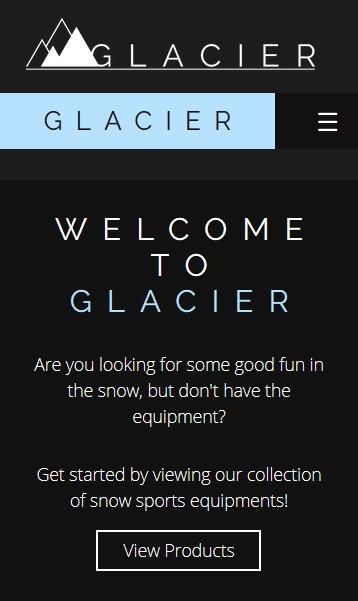
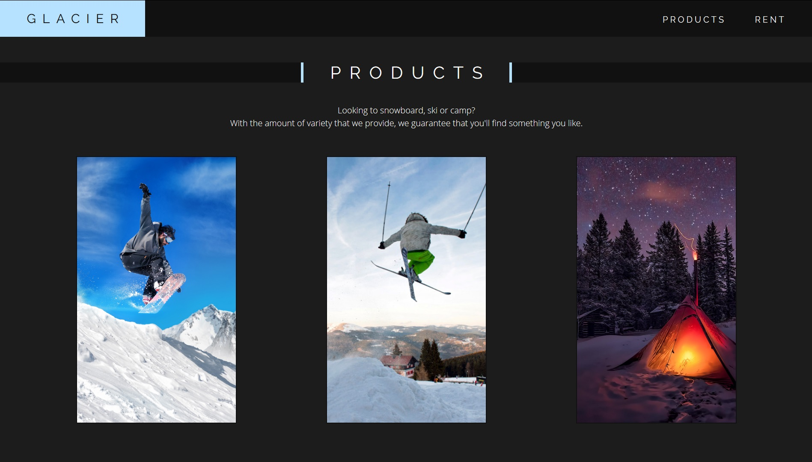
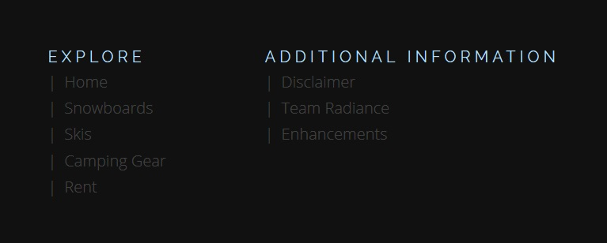
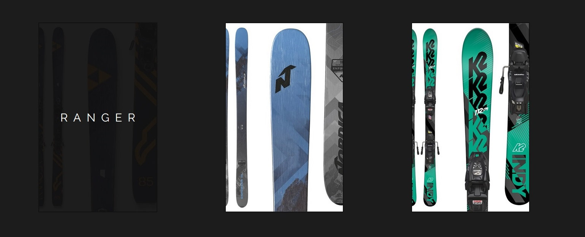

Enhancements
>

Mobile-view CSS
In addition to the "style.css" that was specified as a requirement for the assignment, another "style-mobile.css" was added to style the website for devices with smaller screen resolutions, especially mobile devices. This required the team to fully understand their own code and alter the CSS for mobile view while maintaining a similar layout and feel of the website. This enhancement helps improve usability of the website as the layout of the website changes according the width of the device, so that the user may view the website in the most comfortable way.
To achieve this, the team used "media queries" in order to apply styles after a certain "breakpoint", in this the case, the device width of 768px. Using the code "@media only screen and (max-width: 768px)" sets up the CSS file to only apply the styles when the device width is below 768px. The team then proceeded to reuse the selectors from the original "style.css" file and alter the CSS to conform to the device width.
This enhancement is applied to all pages of the website. In order to view it, resize the window until there is a significant change in layout. Here is the link to the home page: index.html

Grid & Flexbox Layout
Aside from using "float" to create a flexible layout, the team also utilized grid and flexbox layouts. These are powerful tools used by modern web designers to create a layout that they have more control over. This enhancement helps to create a "responsive web design", which means that it scales with the size of the device, so that the user may have utmost comfort when viewing the website, regardless of the device.
To achieve this, the team used "display: grid" or "display: flex" according to their needs. These codes come with extra properties that can be altered, such as "justify-content" or "flex-wrap" for flexbox or "grid-template-columns" for grid. By altering these properties, the team was able to achieve a flexible layout with less effort.
Here are some sites that utilize the grid layout: index.html, product1.html, enquiry.html
Here are some sites and areas that utilize the flexbox layout: Navigation Bar, Footer, index.html, product1.html, aboutme1.html

CSS Selectors
Apart from the selectors that were specified to be used in the assignment, such as the contextual selector, grouping selector, etc., the team also used other CSS selectors to style some of the elements in the website.
Among the selectors used is the pseudo element selector "::before". The team used this selector to create a custom bullet type with the "|" symbol. The team also used the pseudo class selector ":focus" to style the form inputs when they have been clicked on and "focused". This gives feedback to the user which helps improve usability of the website. Lastly, the team used id selectors that target elements with ids that contains a given word. It is written like so, [id*="word"]. Using this, the team was able to style elements that were similar but also slightly different without having to create multiple classes for them.
Pseudo element selector (::before): Footer, product3_4.html
Pseudo class selector (:focus): enquiry.html
id selector: index.html, product1.html

CSS Animations
In order to improve usability of the website, the team also incorporated CSS animations into the website.
CSS animations can simply be done by using the pseudo class selector ":hover" to target the desired element, and then applying the desired styles on that element when hovered over. The team also used the "transition" property to "slow down" the animation, as it is more appealing than instantly popping out. The team also made use of this ":hover" selector to create a dropdown menu for the navigation bar.
CSS animations have been applied to various parts of the website. Here are some examples: Navbar, Footer, index.html, products1.html
Back To Site